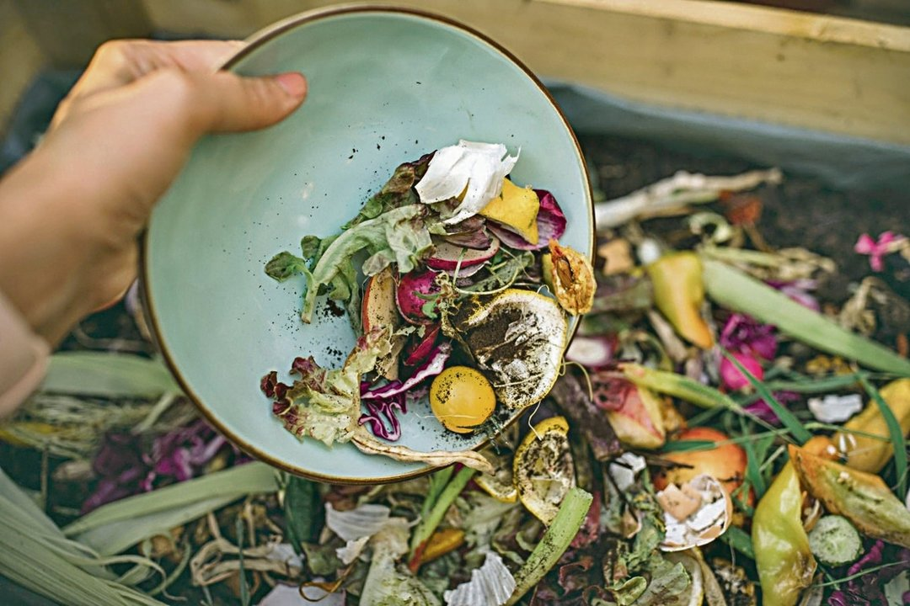
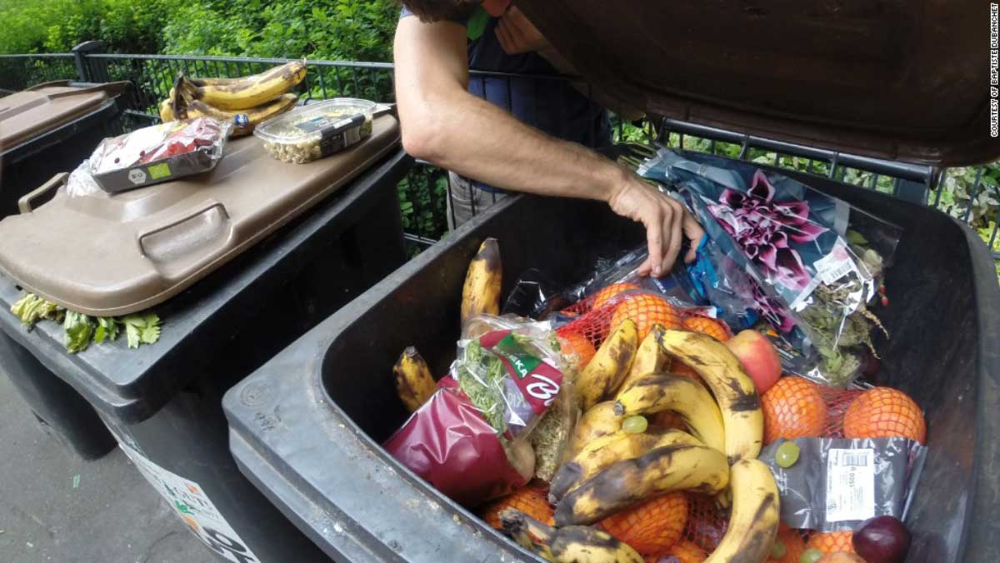
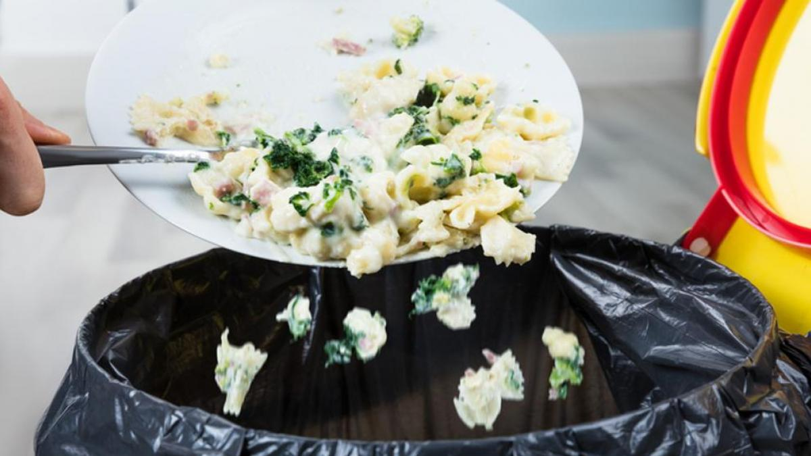

ENSALADAS

Las ensaladas encabezan el puesto de mayor comidas desechadas en hoteles,
sumando una cifra de 30 toneladas por año
FRUTAS

Las frutas son uno de los alimentos más desechados y desperdiciados, alcanzando la
cantidad de 25,7 toneladas por año
PASTAS

Las pastas es la tercer comida más desechada en hoteles, siendo una cantidad de 15 toneladas
de pasta desperdiciada por año